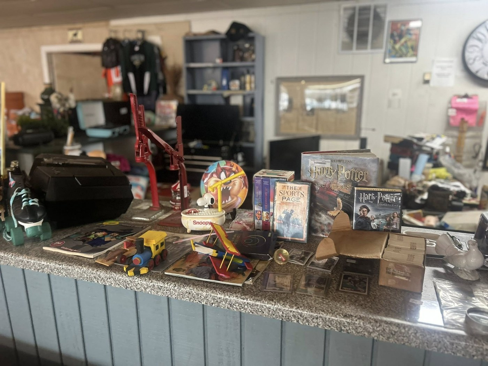
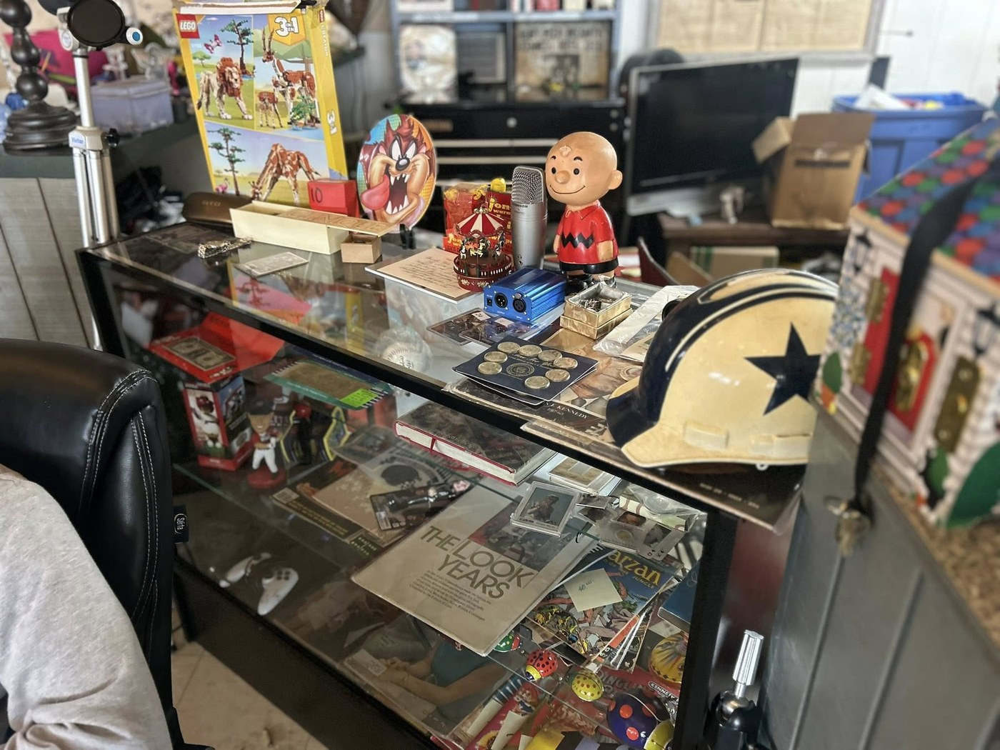

Primary contact
Facebook Messenger
Best for item questions, availability, current hours, and quick check-ins before you come.
Got a question about an item, want to double-check current hours, or planning a stop by the store? Message the Facebook page first for the quickest response.

Best for item questions, availability, current hours, and quick check-ins before you come.
Weatherford, TX 76087
Use directions to head straight to the store.
This preview keeps Messenger and Facebook updates as the main source for current hours and quick questions.

Facebook Messenger is the main contact option and the best place to ask about items, hours, or a planned visit.
No. The appeal of the shop is the rotating mix. Inventory changes regularly, so there is usually something different to look through.
Yes. If you saw something online and do not want to make the drive for no reason, messaging first is the smartest move.
Weatherford Local Resale & Thrift is located at 1812 Fort Worth Hwy, Weatherford, TX 76087.